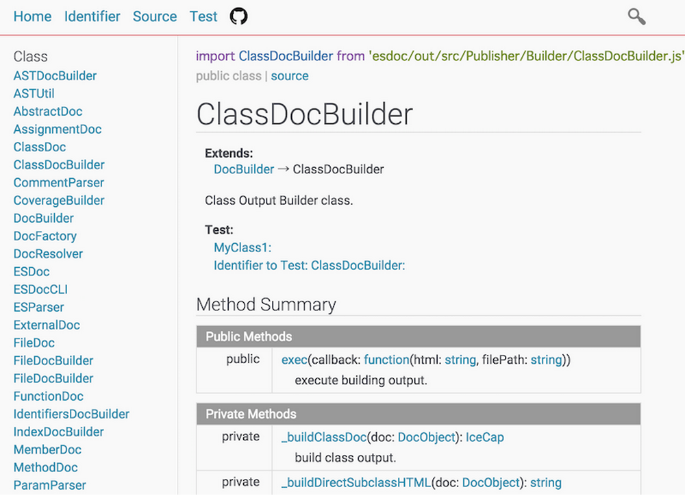

ESDoc is API Documentation Generator for JavaScript(ES6).

Feature
- Generate detailed document.
- Measure document coverage.
- Associate test code to document.
- Target at ES6
classandimport/exportstyle.
Demo
- ESDoc (self hosting)
- A ES6 software that does not have document tag.
Install
npm install -g esdoc
esdoc -h
Usage
esdoc -c esdoc.json
Example
├── esdoc.json
└── src/MyClass.js
src/MyClass.js
/**
* this is MyClass.
*/
export default class MyClass {
/**
* @param {number} param this is param.
* @return {number} this is return.
*/
method(param){}
}
esdoc.json
{
"source": "./src",
"destination": "./esdoc",
}
exec esdoc
esdoc -c esdoc.json
open ./esdoc/index.html
License
MIT